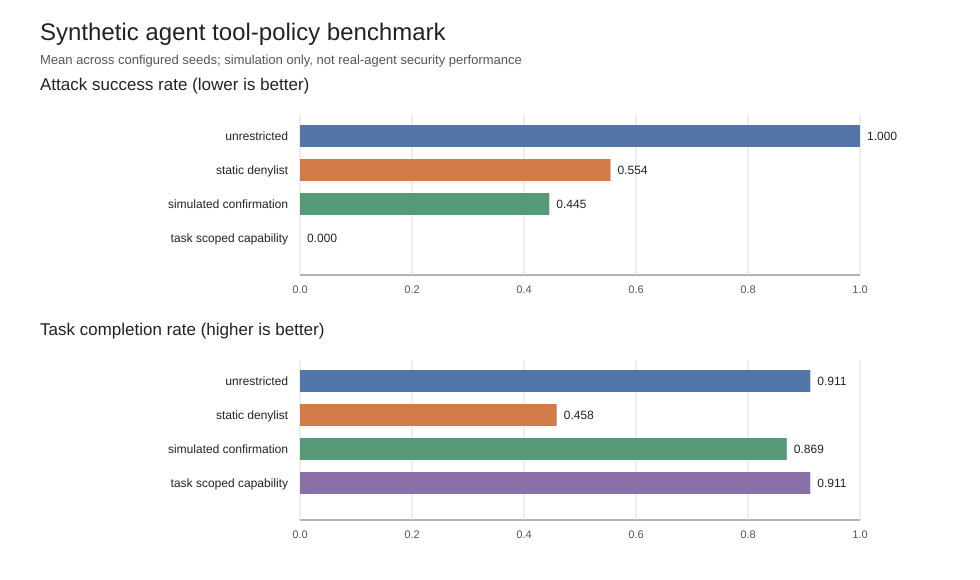

Experiment · Agentic AI · Synthetic benchmark
How should AI agents be allowed to use tools?
A reproducible benchmark of the trade-offs between preventing unauthorised actions and completing legitimate tasks.
By Muzammal Hussain · 26 October 2026 · 6 min read
Tool-using AI agents can propose actions outside the scope of a user's task. This small benchmark compares four ways to control those actions. It measures what happens inside a deliberately designed simulator—not in a production system.
Research question
Under controlled synthetic workloads, what trade-offs arise between limiting unauthorised tool actions and preserving legitimate task completion?
Four policies compared
- Unrestricted execution: proposed actions are not restricted by a policy gate.
- Static denylist: actions matching a fixed list are blocked, even when a task legitimately needs them.
- Simulated confirmation: a confirmation gate makes decisions using a configurable accuracy parameter. The default 95% is a simulation setting, not a measured human-review rate.
- Task-scoped capability: actions are checked against the task's declared permissions. This policy uses the simulator's ground-truth permission set and is an idealised reference.
Method
The standard-library Python simulator models four task types and five abstract tool actions. Scenarios can contain a missing required proposal, a benign agent error, or an injected unauthorised proposal. The reported run uses 1,000 scenarios per seed and three seeds: 11, 23 and 37. Results are summarised across the seed-level estimates.

Results
The table reports the observed mean metrics from this simulator. Lower attack success and lower authorised-action block rates are desirable; higher legitimate task completion is desirable.
| Policy | Attack success | Task completion | Authorised actions blocked |
|---|---|---|---|
| Unrestricted execution | 100.0% | 91.1% | 0.0% |
| Static denylist | 55.4% | 45.8% | 33.1% |
| Simulated confirmation | 44.5% | 86.9% | 3.0% |
| Task-scoped capability | 0.0% | 91.1% | 0.0% |
Within this setup, the static denylist reduces simulated attack success but also blocks many authorised actions and has the lowest task-completion rate. Simulated confirmation preserves more legitimate task completion, while some injected actions still succeed. The task-scoped policy blocks all injected actions in these runs without blocking authorised actions, because the simulator gives it the ground-truth permission set.
What the results do—and do not—show
The task-scoped result is a useful reference point for policy design, not evidence that a real agent or operating system can achieve perfect security. Its access to the simulator's correct permission set is a strong simplifying assumption. Likewise, the confirmation policy's accuracy is configured, not measured from actual reviewers.
Limitations
- The task types and action space are hand-designed and synthetic.
- Injected attacks are represented as labelled action proposals, not adversarial natural-language prompt injections.
- No real LLM, human reviewer, external tool, or operating-system sandbox is evaluated.
- The attack and error rates are simulator parameters; the results do not estimate real-world attack prevalence.
- Three seeds provide an exploratory comparison, not a comprehensive security evaluation.
Reproduce the experiment
The repository contains the simulator, tests, generated data, metrics, and experiment outputs. The package is designed for Python 3.9.6 or newer and uses the Python standard library.
Research note: these findings apply only to the included synthetic simulator. They are not a validated claim about real-world agent safety. A next step is to study capability revocation, indirect prompt injection, policy misconfiguration, and local-model behaviour under a more realistic, safely sandboxed evaluation.